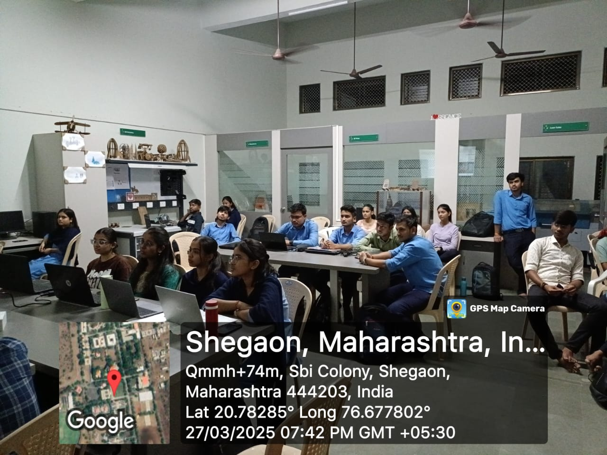
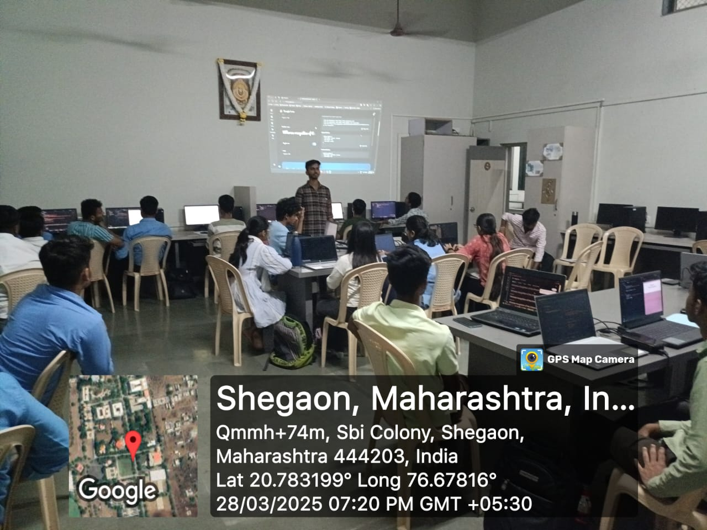

WHAT IS WEB Development?
Web development is the process of building and maintaining websites and web applications.
It involves design, front-end and back-end development, database management, and testing. Web development requires a range of skills and technologies.
Day-1:

What is HTML?
HTML is a set of instructions that tell a web browser how to display a web page.
It's made up of a series of elements, represented by tags (<>), which are used to wrap around content and apply meaning to it.
Basic HTML Structure
A basic HTML document consists of the following elements:
- !DOCTYPE html: The document type declaration, which tells the browser that this is an HTML document.
- html: The root element of the HTML document.
- head: The head section, which contains metadata about the document.
- title: The title of the document, which is displayed in the browser's title bar.
- body: The body section, which contains the content of the web page.
HTML Tags
HTML tags are used to define the structure and content of a web page.
Here are some common HTML tags:
Headings
h1: The main heading of the page.
h2: A subheading.
h3: A sub-subheading.
p: A paragraph of text.
#first day homework
DAY-2:

On Day 2 of the Fab Lab, I learned about HTML tags that make a webpage more attractive. Here are some key tags:
# Text Formatting Tags
1. b: Bold text
2. i: Italic text
3. u: Underlined text
4. font color="color": Text color
5. font size="size": Text size
# Image and Link Tags
1. img src="image_url": Add an image
2. a href="link_url": Create a hyperlink
# List Tags
1. ul: Unordered list
2. ol: Ordered list
3. li: List item
# Table Tags
1. table: Create a table
2. tr: Table row
3. td: Table data
# Semantic Tags
1. header: Header section
2. nav: Navigation section
3. main: Main content section
4. section: Section of related content
5. footer: Footer section
These tags help create a structured and visually appealing webpage. Keep exploring and practicing to become proficient in HTML!
#SECOND DAY HOMEWORK
DAY-3:

On the third day of Fab Lab, I explored CSS, which is a crucial component of web development. Here's a rundown of what I learned:
What is CSS?
CSS stands for Cascading Style Sheets. It's a styling language used to control the layout and appearance of web pages written in HTML or XML. CSS is used to separate the presentation of a document from its structure, making it easier to maintain and update.
Use of CSS in HTML
CSS is used to add visual styles, layout, and user experience to HTML documents.
It's used to:
- Control the layout and positioning of elements
- Add colors, backgrounds, and textures
- Define font styles, sizes, and families
- Create animations and transitions
- Enhance user experience with responsive design
CSS Tags
Here are some essential CSS tags:
Selectors
- - .class: Selects elements with a specific class
- - #id: Selects an element with a specific id
- - tagname: Selects all elements with a specific tag name
Properties>
- - color: Sets the text color
- - background-color: Sets the background color
- -font-size: Sets the font size
- - font-family: Sets the font family
- - margin: Sets the margin
- - padding: Sets the padding
common CSS Styles>
- - text-align: Aligns text
- - width: Sets the width of an element
- - height: Sets the height of an element
- - border: Sets the border of an element
- - border-radius: Sets the border radius of an element
Some common CSS tags used in HTML include:
- - style: Defines an internal stylesheet
- - link: Links to an external stylesheet
By applying CSS styles to HTML elements, you can create visually appealing and user-friendly web pages.
DAY-3 HOMEWORK
DAY-4:
On the fourth day of Fab Lab, you explored the div box model and backgrounds in CSS. Here's a summary:
# Div Box Model
The div box model is a fundamental concept in CSS that describes the structure of an HTML element as a rectangular box.
The box model consists of:
- 1. Content Area: The area where the element's content is displayed.
- 2. Padding: The space between the content area and the border.
- 3. Border: The visible outline of the box.
- 4. Margin: The space between the box and other elements.
# CSS Background Properties
You also learned about CSS background properties, which allow you to add backgrounds to HTML elements. Some common background properties include:
- 1. background-color: Sets the background color of an element.
- 2. background-image: Sets the background image of an element.
- 3. background-repeat: Specifies how the background image should be repeated.
- 4. background-position: Specifies the position of the background image.
# CSS Link Properties
Additionally, you explored CSS link properties, which enable you to style hyperlinks. Some common link properties include:
- 1. color: Sets the text color of the link.
- 2. background-color: Sets the background color of the link.
- 3. text-decoration: Specifies the decoration of the link (e.g., underline, none).
- 4. hover: Defines the styles for the link when it's hovered over.
By understanding the div box model and CSS background and link properties, you can create more complex and visually appealing web pages.
THANK YOU!